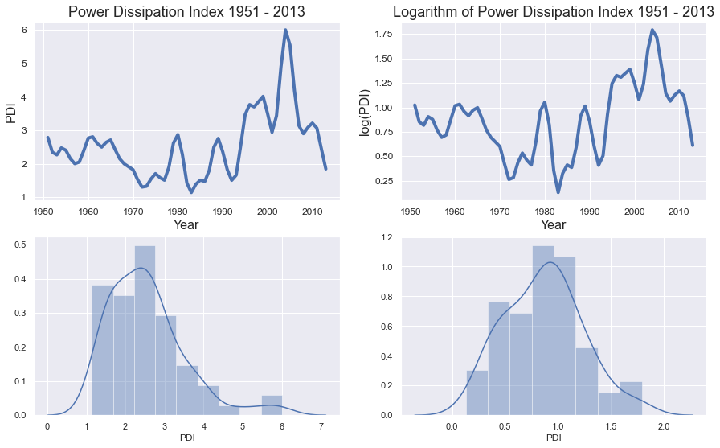
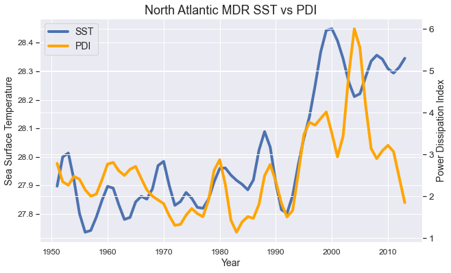
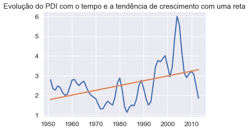
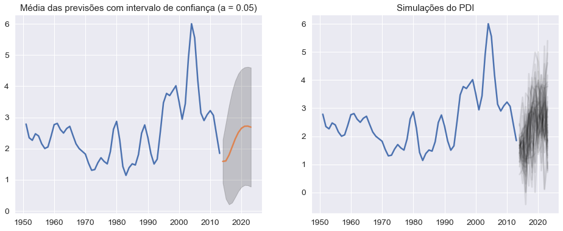
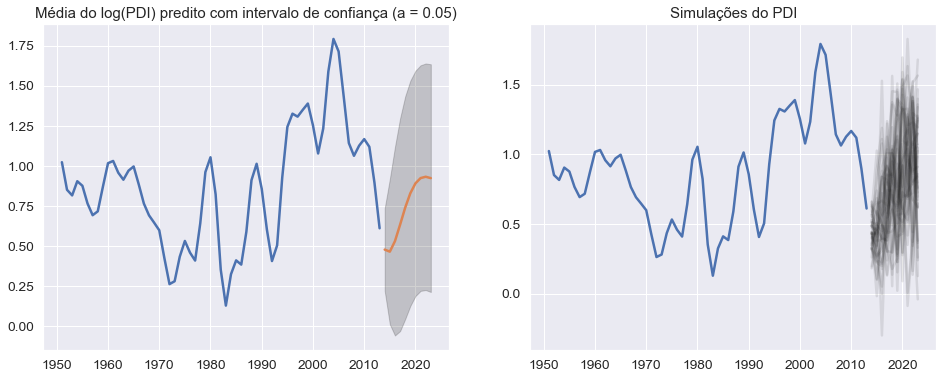
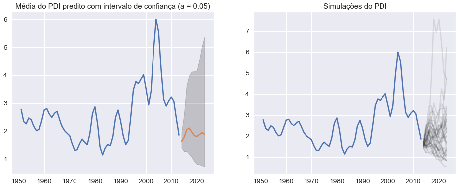
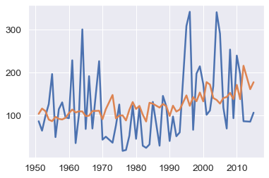

Power Dissipation Index (PDI) Analysis
Definitions
PDI é um índice criado para medir a destrutividade de um furacão, levando em conta sua intensidade por meio de uma transformação velocidade máxima média, a sua duração e, caso estejamos medindo varios furacões, consideramos o número deles.
References: Emanuel, 2005 and Emanuel, 2007
Nas referências, Kerry Emanuel define o PDI como:
onde é a velocidade tangencial máxima dos ventos do furacão e é o tempo de duração do furacão.
The PDI Dataset
Vamos usar o PDI calculado pela National Oceanic & Atmospheric Administration (NOAA) por meio do site Our World in Data. Esses dados cobrem todo o Atlântico Norte, o mar do Caribe e o Golfo do México. Esses dados passam por smooth de fazer média podendara de 5 observações próximas, filtro esse.
Code
fig,axs = plt.subplots(2,2, figsize=(15,9))
axs[0,0].set_title("Power Dissipation Index 1951 - 2013",fontsize = 18)
axs[0,0].set_ylabel("PDI",fontsize = 16)
axs[0,0].set_xlabel("Year",fontsize = 16)
axs[0,0].tick_params(axis='both', which='major', labelsize=12)
axs[0,0].tick_params(axis='both', which='minor', labelsize=12)
axs[0,0].plot(PDI.index, PDI.PDI, lw = 4);
axs[0,1].set_title("Logarithm of Power Dissipation Index 1951 - 2013",fontsize = 18)
axs[0,1].set_ylabel("log(PDI)",fontsize = 16)
axs[0,1].set_xlabel("Year",fontsize = 16)
axs[0,1].tick_params(axis='both', which='major', labelsize=12)
axs[0,1].tick_params(axis='both', which='minor', labelsize=12)
axs[0,1].plot(PDI.index, np.log(PDI.PDI),lw = 4)
sns.distplot(PDI.PDI, ax=axs[1,0])
sns.distplot(np.log(PDI.PDI), ax=axs[1,1])

Analysing Correlation
Uma hipótese comum diante das ideias cientificamente popularizadas é a de que as mudanças climáticas, ao provocarem aquecimento do mar, fazem com que os furacões fiquem mais intensos. De certo modo a intuição poderia falar nessa direção sabendo o processo de formação dos furacões; precisamos ver se essa ideia se mostra nos dados.
Code
# corr = mdr_annual.corr()
# corr.style.background_gradient(cmap='coolwarm')
# corr = df.corr()
# corr.style.background_gradient(cmap='coolwarm')
f,axs = plt.subplots(1,2,figsize=(14,5))
sns.set_context("notebook", font_scale=1.25, rc={"lines.linewidth": 2.5})
sns.heatmap(mdr_annual.corr().round(2),
cmap='coolwarm',annot = True,annot_kws={"size": 13}, ax=axs[0]);
df = mdr_annual.copy()
df['PDI'] = np.log(df['PDI'])
df = df.rename(columns={"PDI":"logPDI"})
sns.set_context("notebook", font_scale=1.25, rc={"lines.linewidth": 2.5})
sns.heatmap(df.corr().round(2),
cmap='coolwarm',annot = True,annot_kws={"size": 13}, ax=axs[1]);
plt.show()
Tanto o PDI quando o logPDI tiveram correlação de aproximadamente .

Code
fig,ax = plt.subplots(figsize=(10,6))
plt.title("North Atlantic MDR SST vs PDI",fontsize = 18)
plt.xlabel("Year",fontsize = 14)
ax.tick_params(axis='both', which='major', labelsize=12)
ax.tick_params(axis='both', which='minor', labelsize=12)
ax2 = ax.twinx()
ax.plot(mdr_annual.sst,lw = 4,label = "SST");
ax.set_ylabel("Sea Surface Temperature",fontsize=14)
ax2.plot(mdr_annual.PDI,lw=4,label="PDI",color = 'orange');
ax2.set_ylabel("Power Dissipation Index",fontsize=14)
fig.legend(loc="upper left",fontsize=14,bbox_to_anchor=(0,1), bbox_transform=ax.transAxes);

Modelos lineares
Quanto à trajetória do PDI, é observável uma leve tendência positiva tendo nos últimos 20 anos um comportamento bem irregular, o que pode ser explicado pela excepcionalidade da ENSO (El-Niño Southern Oscilation) nesse período.
Code
# Aparentemente o PDI cresceu:
X = mdr_annual.drop(columns="PDI")
X = sm.add_constant(X)
Y = np.array(mdr_annual['PDI']).reshape(-1,1)
X['Year'] = np.array(X.index)
model = sm.OLS(Y, sm.add_constant(X['Year'])).fit()
plt.plot(PDI)
plt.plot(model.fittedvalues)
plt.title("Evolução do PDI com o tempo e a tendência de crescimento com uma reta")

Usando as covariáveis do dataset, podemos fazer um modelo onde achamos relação com a pressão ao nivel do mar (slp), a humidade (rhum) e a "cloudiness", ou nebulosidade (cldc).
Code
# X['sst'] = np.log(X['sst'])
(xtrain, xtest, ytrain, ytest) = train_test_split(X.drop(columns=["sst", "wspd", "vwnd", "Year"]), np.log(Y))
model = sm.OLS(ytrain, xtrain).fit()
ypred = model.predict(xtest)
print("R2 nos dados separados para teste:",r2_score(ytest,ypred))
print(model.summary())
R2 nos dados separados para teste: 0.2268374488496503
OLS Regression Results
==============================================================================
Dep. Variable: y R-squared: 0.781
Model: OLS Adj. R-squared: 0.766
Method: Least Squares F-statistic: 51.26
Date: Mon, 31 Aug 2020 Prob (F-statistic): 2.98e-14
Time: 10:22:52 Log-Likelihood: 14.019
No. Observations: 47 AIC: -20.04
Df Residuals: 43 BIC: -12.64
Df Model: 3
Covariance Type: nonrobust
==============================================================================
coef std err t P>|t| [0.025 0.975]
------------------------------------------------------------------------------
const -484.2535 146.318 -3.310 0.002 -779.332 -189.175
rhum 0.7547 0.079 9.497 0.000 0.594 0.915
slp 0.4106 0.143 2.871 0.006 0.122 0.699
cldc 1.9827 0.229 8.641 0.000 1.520 2.445
==============================================================================
Omnibus: 4.476 Durbin-Watson: 2.046
Prob(Omnibus): 0.107 Jarque-Bera (JB): 3.413
Skew: -0.468 Prob(JB): 0.182
Kurtosis: 3.932 Cond. No. 5.42e+06
==============================================================================
Pode parecer um pouco contraintuitivo a princípio não achar relação significativa da temperatura do mar e da intensidade (na verdade, a destrutibilidade, o PDI) dos furacões. Uma explicação plausivel para isso é que os dados de temperatura conseguem ser explicados pelas outras variáveis:
Code
model = sm.OLS(X['sst'], X.drop(columns=['vwnd','wspd', 'Year', 'sst'])).fit()
print(model.summary())
OLS Regression Results
==============================================================================
Dep. Variable: sst R-squared: 0.749
Model: OLS Adj. R-squared: 0.736
Method: Least Squares F-statistic: 58.61
Date: Mon, 31 Aug 2020 Prob (F-statistic): 1.08e-17
Time: 10:22:52 Log-Likelihood: 53.106
No. Observations: 63 AIC: -98.21
Df Residuals: 59 BIC: -89.64
Df Model: 3
Covariance Type: nonrobust
==============================================================================
coef std err t P>|t| [0.025 0.975]
------------------------------------------------------------------------------
const -177.9485 73.852 -2.410 0.019 -325.726 -30.171
rhum 0.2643 0.040 6.528 0.000 0.183 0.345
slp 0.1764 0.072 2.446 0.017 0.032 0.321
cldc 1.3740 0.113 12.204 0.000 1.149 1.599
==============================================================================
Omnibus: 0.296 Durbin-Watson: 0.473
Prob(Omnibus): 0.862 Jarque-Bera (JB): 0.479
Skew: -0.023 Prob(JB): 0.787
Kurtosis: 2.575 Cond. No. 5.52e+06
==============================================================================
Time series Analysis
Não conseguimos modelar essas variações do PDI com o tempo muito bem com os modelos de regressão, embora ganhamos algum insight sobre como as outras variáveis climáticas estão relacionadas com ele. Sendo assim, agora vamos tratar a trajetória do PDI como uma série temporal; a relação dele com o tempo vai nos dar informação sobre se é esperado que ele cresça nos próximos anos. Inicialmente, vamos ajustar um modelo autorregressivo de ordem 2 sendo que essa ordem do modelo foi escolhida com critérios de informação:
Code
mod = sm.tsa.ARIMA(tsPDI, order=(2, 0, 0))
modfit = mod.fit()
# modfit.summary()
fig, axs = plt.subplots(1,2, figsize = (16,6))
# With CI:
axs[0].plot(tsPDI['PDI'])
# plt.plot(tsPDI['PDI'], axs = axs[0])
step = 10
forecast = modfit.forecast(step)
x = pd.date_range(dt.datetime(2013,1,1), freq="A", periods=step)
axs[0].plot(x, forecast[0])
axs[0].fill_between(x, forecast[2][:,0], forecast[2][:,1],
color='k', alpha=.2)
#simulating some cenarios:
sims = np.zeros((500, step))
for i in range(500):
sims[i] = np.random.normal(forecast[0], forecast[1])
axs[1].plot(tsPDI['PDI'])
for i in range(40):
axs[1].plot(x, sims[i], color = "k", alpha=.1)
axs[0].set_title('Média das previsões com intervalo de confiança (a = 0.05)')
axs[1].set_title('Simulações do PDI')
plt.show()

Uma outra forma de modelar no tempo que facilita a análise do modelo é trabalhar com o log dessa série. Isso ajuda a diminuir o pico no crescimento da destrutibilidade e induz na escala original do PDI a não ter valores negativos, o que está de acordo com a definição do PDI.
Code
tsLogPDI = tsPDI.apply(np.log)
#sm.tsa.stattools.adfuller(tsLogPDI['PDI']) ainda não é estacionaria a 5% de significancia
mod2 = sm.tsa.ARIMA(tsLogPDI, order=(2, 0, 0))
modfit2 = mod2.fit()
# fig, axs = plt.subplots(2,2, figsize = (10,4))
# plot_acf(modfit2.resid, ax = axs[0, 0])
# plot_pacf(modfit2.resid, ax = axs[0, 1])
# sm.qqplot(modfit2.resid, dist=stats.norm, line="s", ax = axs[1, 0])
# sns.distplot(modfit2.resid, ax = axs[1, 1])
# plt.show()
fig, axs = plt.subplots(1,2, figsize = (16,6))
# With CI:
axs[0].plot(tsLogPDI['PDI'])
# plt.plot(tsPDI['PDI'], axs = axs[0])
step = 10
forecast = modfit2.forecast(step)
x = pd.date_range(dt.datetime(2013,1,1), freq="A", periods=step)
axs[0].plot(x, forecast[0])
axs[0].fill_between(x, forecast[2][:,0], forecast[2][:,1],
color='k', alpha=.2)
#simulating some cenarios:
sims = np.zeros((500, step))
for i in range(500):
sims[i] = np.random.normal(forecast[0], forecast[1])
axs[1].plot(tsLogPDI['PDI'])
for i in range(40):
axs[1].plot(x, sims[i], color = "k", alpha=.1)
axs[0].set_title('Média do log(PDI) predito com intervalo de confiança (a = 0.05)')
axs[1].set_title('Simulações do PDI')
plt.show()

Code
fig, axs = plt.subplots(1,2, figsize = (16,6))
# With CI:
axs[0].plot(tsPDI['PDI'])
# plt.plot(tsPDI['PDI'], axs = axs[0])
step = 10
forecast = modfit2.forecast(step)
x = pd.date_range(dt.datetime(2013,1,1), freq="A", periods=step)
#simulating some cenarios:
sims = np.zeros((1000, step))
for i in range(1000):
sims[i] = np.exp(np.random.normal(forecast[0], forecast[1]))
# computing some CIs:
CIs = np.zeros((step,3))
for i in range(step):
CIs[i] = np.quantile(sims[:,i], [0.025, 0.5, 0.975])
axs[0].plot(x, CIs[:,1])
axs[0].fill_between(x, CIs[:,0], CIs[:,2],
color='k', alpha=.2)
axs[1].plot(tsPDI['PDI'])
for i in range(30):
axs[1].plot(x, sims[i], color = "k", alpha=.15) #teste de sanidade
axs[0].set_title('Média do PDI predito com intervalo de confiança (a = 0.05)')
axs[1].set_title('Simulações do PDI')
plt.show()

Além disso, conseguimos achar uma certa transformação nos dados que é estacionária; permitindo um bom ajuste do modelo ARIMA. Passando as predições para o espaço do PDI, temos as seguintes previsões:
Code
# plt.plot(np.log(np.diff(np.log(mdr_annual['PDI'])) + 1))
# sm.tsa.stattools.adfuller(np.log(np.diff(np.log(mdr_annual['PDI'])) + 1))
tsTr = np.log(np.diff(np.log(tsPDI['PDI']))+1)
# terceiro modelo: log(delta(log(PDI))+1) como ARMA(2,1)
mod3 = sm.tsa.ARIMA(tsTr, order=(2,0,1))
modfit3 = mod3.fit()
# modfit3.summary()
# fig, axs = plt.subplots(2,2, figsize = (10,4))
# plot_acf(modfit3.resid, ax = axs[0, 0])
# plot_pacf(modfit3.resid, ax = axs[0, 1])
# sm.qqplot(modfit3.resid, dist=stats.norm, line="s", ax = axs[1, 0])
# sns.distplot(modfit3.resid, ax = axs[1, 1])
# plt.show()
fig, axs = plt.subplots(1,2, figsize = (16,6))
# With CI:
axs[0].plot(tsTr)
# plt.plot(tsPDI['PDI'], axs = axs[0])
step = 10
forecast = modfit3.forecast(step)
x = range(len(tsTr), len(tsTr) + step)
axs[0].plot(x, forecast[0])
axs[0].fill_between(x, forecast[2][:,0], forecast[2][:,1],
color='k', alpha=.2)
#simulating some cenarios:
sims = np.zeros((500, step))
for i in range(500):
sims[i] = np.random.normal(forecast[0], forecast[1])
axs[1].plot(tsTr)
for i in range(40):
axs[1].plot(x, sims[i], color = "k", alpha=.1) #teste de sanidade
axs[0].set_title('Média da transformação predita com intervalo de confiança (a = 0.05)')
axs[1].set_title('Simulações da transformação')
axs[0].plot(tsLogPDI['PDI'])
# plt.plot(tsPDI['PDI'], axs = axs[0])
step = 10
forecast = modfit3.forecast(step)
x = pd.date_range(dt.datetime(2013,1,1), freq="A", periods=step)
#simulating some cenarios:
dsims = np.zeros((1000, step))
for i in range(1000):
dsims[i] = np.exp(np.random.normal(forecast[0], forecast[1])) - 1
last = tsLogPDI["PDI"].values[-1]
for i in range(len(dsims)):
dsims[i] = last + np.cumsum(dsims[i])
# computing some CIs:
CIs = np.zeros((step,3))
for i in range(step):
CIs[i] = np.quantile(dsims[:,i], [0.025, 0.5, 0.975])
axs[0].plot(x, CIs[:,1])
axs[0].fill_between(x, CIs[:,0], CIs[:,2],
color='k', alpha=.2)
axs[1].plot(tsLogPDI['PDI'])
for i in range(50):
axs[1].plot(x, dsims[i], color = "k", alpha=.1) #teste de sanidade
axs[0].set_title('Média do log(PDI) predito com intervalo de confiança (a = 0.05)')
axs[1].set_title('Simulações do log(PDI)')
plt.show()
fig, axs = plt.subplots(1,2, figsize = (16,6))
# With CI:
axs[0].plot(tsPDI['PDI'])
# plt.plot(tsPDI['PDI'], axs = axs[0])
step = 10
forecast = modfit3.forecast(step)
x = pd.date_range(dt.datetime(2013,1,1), freq="A", periods=step)
#simulating some cenarios:
dsims = np.zeros((1000, step))
for i in range(1000):
dsims[i] = np.exp(np.random.normal(forecast[0], forecast[1])) - 1
last = tsLogPDI["PDI"].values[-1]
for i in range(len(dsims)):
dsims[i] = np.exp(last + np.cumsum(dsims[i]))
# computing some CIs:
CIs = np.zeros((step,3))
for i in range(step):
CIs[i] = np.quantile(dsims[:,i], [0.025, 0.5, 0.975])
axs[0].plot(x, CIs[:,1])
axs[0].fill_between(x, CIs[:,0], CIs[:,2],
color='k', alpha=.2)
axs[1].plot(tsPDI['PDI'])
for i in range(40):
axs[1].plot(x, dsims[i], color = "k", alpha=.1) #teste de sanidade
axs[0].set_title('Média do PDI predito com intervalo de confiança (a = 0.05)')
axs[1].set_title('Simulações do PDI')
plt.show()

Embora todos esses métodos tenham alguma razoabilidade, eles as previsões claramente tem uma variância muito grande, refletindo a dificuldade em prever esse dado dado que ele não tem nenhum padrão claro.
Count
Medir destrutibilidade do furacão não é coisa trivial; não basta olhar o PDI visto que os nossos dados de PDI podem estar errados por medições inconsistentes de velocidade até os anos 90, onde começamos a ter um comportamento anômalo do ENSO; além da dinâmica sazonal de correntes termosalínicas gerarem sazonalidade nas temperaturas entre decádas (Atlantic Multidecadal Oscilation, AMO). Outras alternativas comumente consideradas são a de contagem de furacões no ano e de tamanho de cada furacão; cada uma delas com seus problemas particulares. Abaixo, fazemos um modelo simples de GLM para contagem usando como preditores as covari
Code
data = pd.read_csv('../Datasets/data_atl_merged2.csv',parse_dates=['Date'])
data = data[['ID', 'Name', 'Date','Year', 'Time', 'Event', 'Status', 'Latitude',
'Longitude', 'Maximum Wind', 'sst', 'rhum',
'wspd', 'slp', 'cldc']]
def category(mw):
if mw>=137:
return "Category 5"
elif mw>=113:
return "Category 4"
elif mw>=96:
return "Category 3"
elif mw>=83:
return "Category 2"
elif mw>=64:
return "Category 1"
elif mw>=34:
return "Tropical Storm"
else:
return "Tropical Depression"
cat_id = data.groupby('ID')['Maximum Wind'].max().apply(category)
data.loc[:,'Category']=data.ID.apply(lambda x:cat_id[x])
# data.groupby('Category')['ID'].count().plot.bar();
major_df = data[data.Category.apply(lambda x: 0 if x[-1]=='m' else int(x[-1]))>=3]
#major_df.groupby('Year')['ID'].count().plot()
#sm.tsa.stattools.adfuller(count)
count = major_df.groupby("Year")["ID"].count()
X = pd.pivot_table(major_df, index="Year", values=["sst", "rhum", "wspd", "slp", "cldc"])
X['Y'] = X.index.values
countModel = sm.GLM(count, sm.add_constant(X), family=sm.families.NegativeBinomial())
countFit = countModel.fit()
print(countFit.summary()) #descomente para ver o sumario do ajuste
plt.plot(count)
plt.plot(countFit.predict(sm.add_constant(X)))
plt.show()
Generalized Linear Model Regression Results
==============================================================================
Dep. Variable: ID No. Observations: 60
Model: GLM Df Residuals: 54
Model Family: NegativeBinomial Df Model: 5
Link Function: log Scale: 1.0000
Method: IRLS Log-Likelihood: -347.61
Date: Mon, 31 Aug 2020 Deviance: 26.626
Time: 10:22:58 Pearson chi2: 26.3
No. Iterations: 12
Covariance Type: nonrobust
==============================================================================
coef std err z P>|z| [0.025 0.975]
------------------------------------------------------------------------------
const -146.2316 147.049 -0.994 0.320 -434.443 141.980
cldc 0.1977 0.589 0.336 0.737 -0.956 1.351
rhum 0.0182 0.067 0.271 0.786 -0.113 0.150
slp 0.1338 0.142 0.940 0.347 -0.145 0.413
sst 0.0952 0.132 0.723 0.470 -0.163 0.353
wspd 0.0182 0.067 0.271 0.786 -0.113 0.150
Y 0.0048 0.008 0.602 0.547 -0.011 0.020
==============================================================================

Olhando esse gráfico do ajuste e a tabela com as estatísticas do ajuste, vemos que o modelo da binomial negativa claramente não consegue capturar muitas informações relevantes que o número de furacões nos dá. Outra medida também comum de destrutividade dos furacões é o tamanho do raio, que não será analisado nesse trabalho.